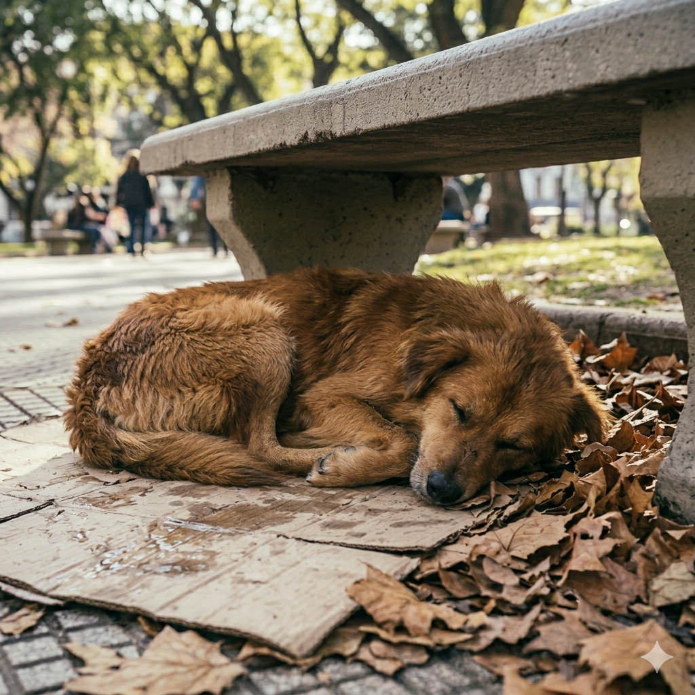

Hola a todos los amantes de los canes
En Patitas Unidas, nos dedicamos a rescatar perritos que se encuentran en situación de calle.
Les ofrecemos salud, amor y un hogar temporal hasta que encuentren una familia adoptiva.
"Rescatar a un perro no cambiará el mundo, pero cambiará el mundo de ese perro".

Les dejamos este video de concientización
Descubrí nuestros objetivos principales a continuación.